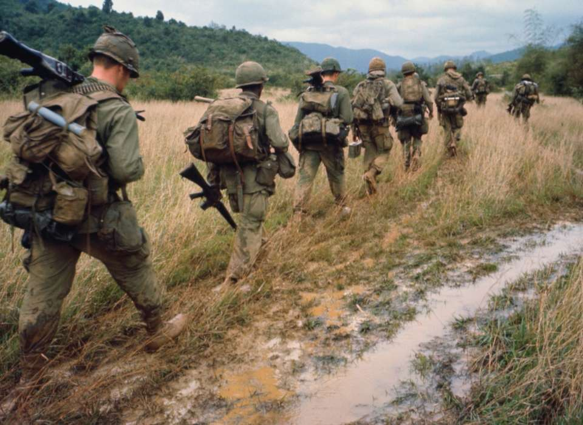
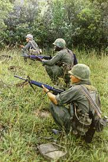

The vietnam war was a military conflict which was targeted against the French, in which 13 countries participated. By 1961, the guerrilla had already become widespread. North Vietnam, back then, fought for independence. Their goal was to try to unify the country under a communist government, while South Vietnam was actively fighting to prevent communism from spreading, backed by the United States of America.
This was the longest war in American history and it resulted in over 60,00 american deaths and over 2 million vietnamese deaths. Years after, from 1968 to 1973, efforts were made to end the war through diplomacy, and in January 1973, an agreement was finally reached. U.S forces were withdrawn from Vietnam and U.S prisoners of war were released. And in April 1975, South Vietnam surrendered to the North, and Vietnam was reunited.
There were countries which stepped in because they wanted to prevent certain things from happening, like the United States when they entered to prevent the communism from spreading to other parts. They got heavily affected when the war ended, along with many other countries. They had big economical problems that they themselves could not solve back then.
Deciding on which side was justified in this war is hard because both sides used violent tactics in order to get what they wanted, like bombings and guerrilla fighting, which caused a lot of sadness for people. The war had officially ended in 1975 when the North took over the South. North Vietnam might be the justified side for a lot of people because they wanted independence, but they did that through massive killings, so that is why it was not justified for other people.